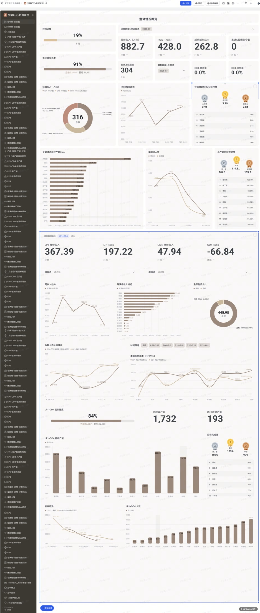
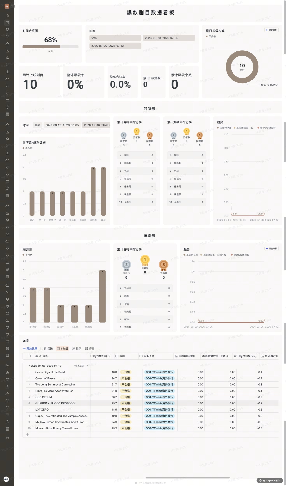
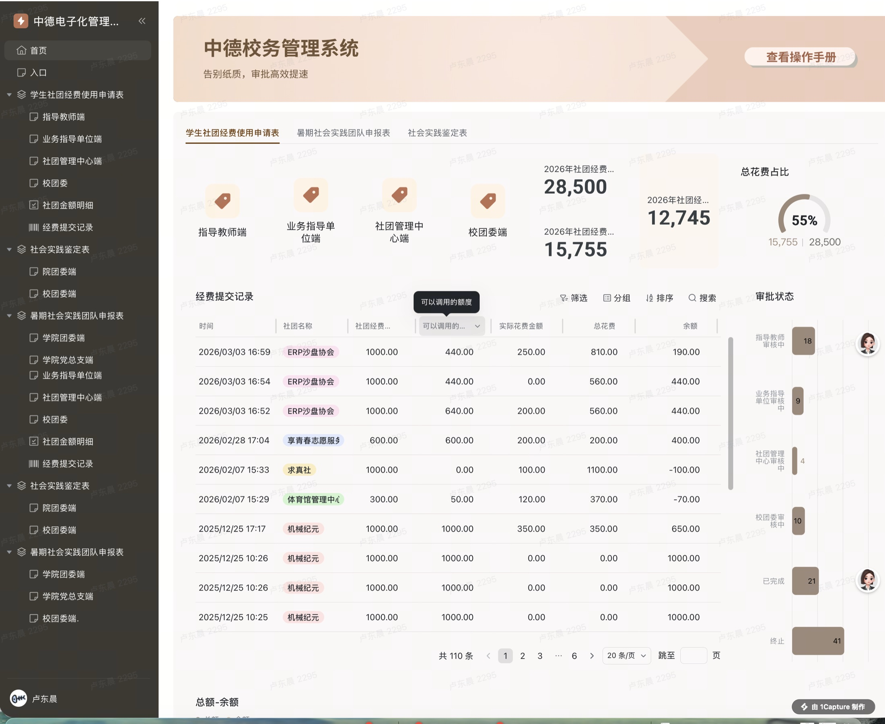

剧多多 · 项目管理模块产品规划
围绕三类海外业务场景，盘点现有工作流、交付链路与数据指标，规划项目管理平台的优化方向。
- 梳理不同业务线的共性流程与差异节点，补全平台化所需的流程全景。
- 针对百度网盘上传慢、并发受限及缺少完成通知等问题，规划一键上传、进度三态与“上传即通知”功能，推动交付流程产品化。
- 定义项目核心数据指标，规划数据沉淀、经营看板及分阶段工作流提效方案，并通过Demo辅助需求沟通与评审。
AI短剧项目管理｜流程产品化 × 数据管控 × 跨部门交付
以业务流程为起点，将分散的项目管理动作转化为可沉淀、可分析、可迭代的平台能力。
围绕三类海外业务场景，盘点现有工作流、交付链路与数据指标，规划项目管理平台的优化方向。
以下为项目中使用或参考的飞书多维表格、仪表盘及管理模板。访问权限以原页面设置为准。
围绕AI短剧生产经营与内容表现建立指标体系，使项目进度、成本、产能和结果能够被持续追踪。
整合经营收入、ROI3、后期制作成本、交付进度及导演组产能等指标。

从剧目、导演和编剧多个维度观察上线规模、合格率、爆款率与利润趋势。

将线下申请、逐级审批、额度核验与结果汇总转为可配置的线上系统，让复杂流程能够被追踪、统计和复盘。
围绕学生社团经费和社会实践申报，搭建覆盖指导教师、业务指导单位、社团管理中心及校团委的多角色审批系统。

负责业务调研、指标定义、底表结构设计、看板方案、跨团队推进及上线后的数据核对与使用反馈。
脱敏说明：页面用于展示可迁移的项目管理与数字化能力。部分截图来自真实工作场景，数据、业务名称及访问权限归原组织所有；公开展示不代表开放编辑或复制权限。